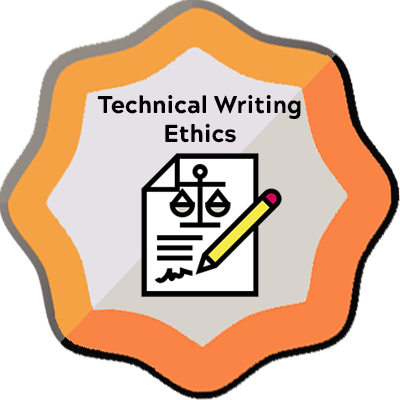
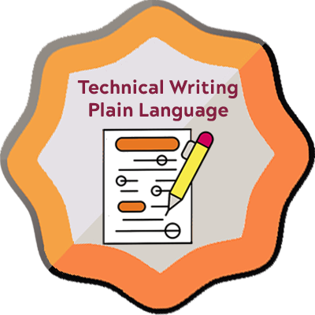
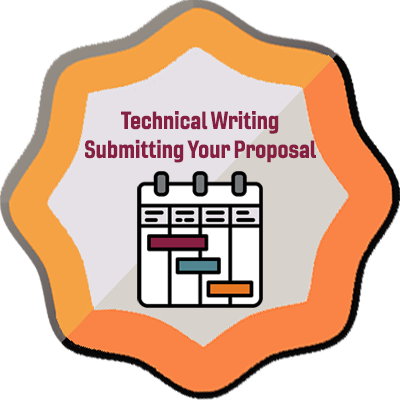
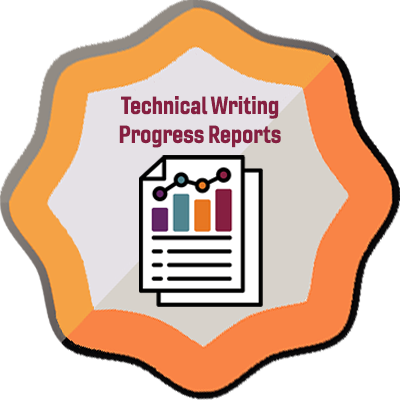
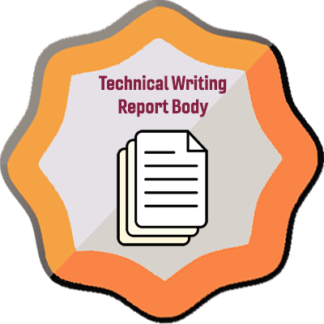
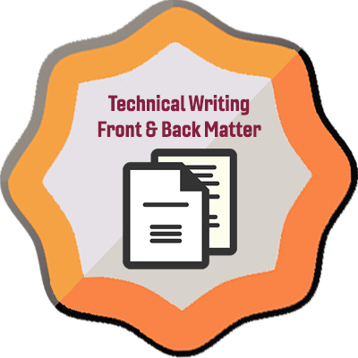
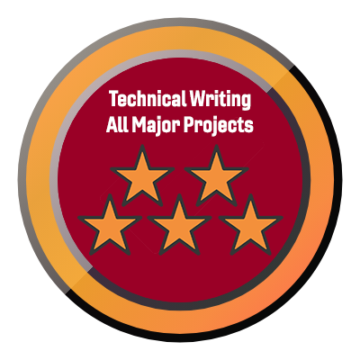

Trying to figure out if you’ve done all the work for a specific week? Wondering how much progress you’re making? Having trouble with all the details on the Grades page in Canvas? The Technical Writing Badges below can quickly tell how you’re doing in the course.
Once you have earned a Complete on every one of the requirements for a weekly Module, Canvas automatically awards you the relevant badge. The badges don’t carry any credit in the course, but they can tell you when you have completed all the work in a module or another category of work.
For instance, for Week 1, you need to earn a Complete on the six activities for that week:
If you earned a Complete on all six, you were awarded the related badge, Technical Writing: Course Intro (Module 1). It’s as easy as that.
Looking at the Grades page in Canvas, you might find it hard to figure out whether you’ve finished everything or whether you’re on track. The Badges simplify that process. If you’ve earned the badge, you’re done with that week. The more badges you have, the closer you are to reaching an A in the course. You’ll need all 14 of the weekly Badges for an A.
Beyond that, it’s more complicated. There isn’t a scale that can tell you X Badges means you have an A- or a B+ since course grades are based on the Effort Expectations listed in the Short Guide (not on the number of badges you earn).
Click the Credentials command in the left menu in Canvas. You’ll see a page that shows all the Badges in the course. Those that you have earned are in color. Those you haven’t earned are grayed out.
You may also receive an email from Canvas Badges <noreply@badgr.com> when you earn a Badge.
Remember that you have to earn a Complete on the requirements each week for Canvas to award you the badge. For work that I mark manually (like Major Projects and Canvas Discussions), you won’t see the Badge until I have marked all the work (usually after the Grace Period ends for the week).
| Badge Image | Badge Name & Criteria |
|---|---|
Technical Writing: Course Intro (Module 1)Earn a Complete on all Module 1 requirements, which focus on an introduction to the course. |
|
Technical Writing: Rhetorical Awareness (Module 2)Earn a Complete on all Module 2 requirements, which focus on rhetorical awareness and reader-centered communication. |
|
|  |
Technical Writing: Ethics (Module 3)Earn a Complete on all Module 3 requirements, which focus on ethics and technical writing. |
|  |
Technical Writing: Plain Language (Module 4)Earn a Complete on all Module 4 requirements, which focus on using plain language to compose clear and concise documents. |
Technical Writing: UX & Document Design (Module 5)Earn a Complete on all Module 5 requirements, which focus on user experience and document design. |
|
Technical Writing: UX Document Revision (Module 6)Earn a Complete on all Module 6 requirements, which focus on revising user documentation to improve user experience and document design. |
|
Technical Writing: Project Management (Module 7)Earn a Complete on all Module 7 requirements, which focus on setting up group contracts and schedules for the term. |
|
Technical Writing: Proposals & Group Logistics (Module 8)Earn a Complete on all Module 8 requirements, which focus on beginning group work on a proposal for the recommendation report. |
|
|  |
Technical Writing: Submitting Your Proposal (Module 9)Earn a Complete on all Module 9 requirements, which focus on revising and submitting the group proposal. |
Technical Writing: Conducting Research (Module 10)Earn a Complete on all Module 10 requirements, which focus on conducting research. |
|
|  |
Technical Writing: Progress Reports (Module 11)Earn a Complete on all Module 11 requirements, which focus on writing a progress report. |
|  |
Technical Writing: Report Body (Module 12)Earn a Complete on all Module 12 requirements, which focus on writing the body of the Recommendation Report. |
|  |
Technical Writing: Front & Back Matter (Module 13)Earn a Complete on all Module 13 requirements, which focus on writing the front and back matter of the Recommendation Report. |
Technical Writing: Recommendation Report (Module 14)Earn a Complete on all Module 14 requirements, which focus on finishing the Recommendation Report. |
|
|  |
Technical Writing: All Major ProjectsShows writing excellence by earning a Complete on all five major projects. |
Technical Writing: All Weekly Check-In SurveysProvides regular weekly check-in feedback by completing all Check-In Surveys. |
|
Technical Writing: Sharp ReadersEarned rarely by those who demonstrate exceptional close reading skills. |